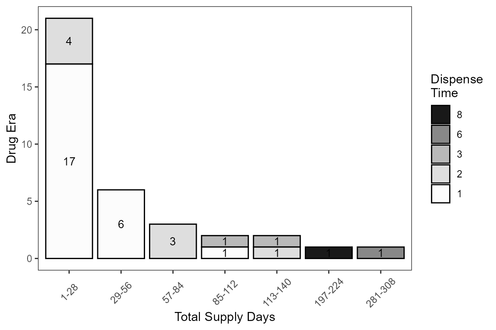

使用手冊
套件版本
使用者請先安裝本套件的最新版本。
install.packages("devtools")
devtools::install_github("DHLab-TSENG/pharm")
library(pharm)
library(dplyr)範例資料
sample_data資料內容的生成方式為，先將來源資料-美國真實給藥紀錄去識別化，對原始資料的病患編碼重新編排順序，並將每筆給藥日期做時間推移。再將部份給藥紀錄中的NDC替換為相同藥物但不同的NDC，意指該藥物的NDC編碼歷史中不同的NDC編碼。最終資料結果，共產生2,747,617筆給藥紀錄，39,989筆病患編號，分別來自於不同的病人。
本套件功能演示所使用的資料內容sample_data_subset，是由sample_data資料中MemberId病患編號 = 1 AND 42 select出的資料子集。資料欄位如下:
-
MemberId病患編號 -
DispenseDate配藥日期，時間區間為 2025-12-06 至 2038-01-25 -
NationalDrugCode藥物的美國藥物編碼(NDC)，共17,326種不同的藥物編碼 -
Quantity配藥數量 -
DaysSupply藥物供給天數
| MemberId | DispenseDate | NationalDrugCode | Quantity | DaysSupply |
|---|---|---|---|---|
| 1 | 2031-12-01 | 00186504031 | 30 | 30 |
| 1 | 2032-01-31 | 00186504031 | 30 | 30 |
| 1 | 2032-03-25 | 00186504031 | 30 | 30 |
| 42 | 2032-01-05 | 00186504031 | 30 | 30 |
| 42 | 2032-03-07 | 00186504031 | 30 | 30 |
| 42 | 2032-04-30 | 00186504031 | 30 | 30 |
| 42 | 2032-03-08 | 00006504031 | 90 | 90 |
| 42 | 2032-04-25 | 00006504031 | 90 | 90 |
一、適應症查詢藥物功能
1. Get RxCui Via Maytreat
資料來源是從美國退伍軍人局MED-RT資料庫建立此功能，使用者透過輸入適應症可以取得其治療用的所有藥物成分。
範例:以輸入適應症esophagitis食道炎為例，可以取得食道炎所有藥物成分的RxCui，並且存在Esophagitis_List表中。資料欄位如下:
-
RxCui藥物RxCui -
Name藥物名稱 -
MinCooncept.Id適應症Id -
MinConcept.Name適應症名稱
Esophagitis_List <- getRxCuiViaMayTreat("esophagitis")
knitr::kable(
head(Esophagitis_List)
)| RxCui | Name | MinConcept.Id | MinConcept.Name |
|---|---|---|---|
| 1792108 | Omeprazole Sodium | D004941 | Esophagitis |
| 236486 | Omeprazole magnesium | D004941 | Esophagitis |
| 7646 | Omeprazole | D004941 | Esophagitis |
| 10156 | Sucralfate | D004941 | Esophagitis |
| 1487143 | sucralfate malate | D004941 | Esophagitis |
| 17128 | lansoprazole | D004941 | Esophagitis |
二、藥物編碼轉換功能
本套件提供以下不同藥物詞彙表間藥物編碼轉換
- U.S. National Drug Code
- NLM RxNorm
- WHO ATC
- 台灣全民健康保險藥品編碼
1. Get SBD SCD RxCui Via RxCui
在取得Esophagitis_List適應症之藥物成分RxCui表後，使用者透過輸入RxCui表可以取得所有含有這些藥物成份之藥廠品牌以及臨床用藥。
範例:輸入Esophagitis_List食道炎的適應症之藥物成分RxCui表，可以取得轉換後的SBD或SCD RxCui，並且存在Esophagitis_SBD_SCD_List表中。資料欄位如下:
-
RxCui藥物RxCui -
Name藥物名稱 -
MinCooncept.Id適應症Id -
MinConcept.Name適應症名稱 -
SBD.rxcui藥物SBD RxCui
Esophagitis_SBD_SCD_List <- getSBDRxCuiViaRxCui(df = Esophagitis_List[3,],
RxCuiColName = RxCui,
cores = 2)
knitr::kable(
head(Esophagitis_SBD_SCD_List)
)| RxCui | Name | MinConcept.Id | MinConcept.Name | SBD.rxcui |
|---|---|---|---|---|
| 7646 | Omeprazole | D004941 | Esophagitis | 2262026 |
| 7646 | Omeprazole | D004941 | Esophagitis | 2003656 |
| 7646 | Omeprazole | D004941 | Esophagitis | 198051 |
| 7646 | Omeprazole | D004941 | Esophagitis | 199119 |
| 7646 | Omeprazole | D004941 | Esophagitis | 389171 |
| 7646 | Omeprazole | D004941 | Esophagitis | 389172 |
2. NDC 與 RxNorm 編碼轉換
2.1. RxNorm 轉換為 NDC
在取得Esophagitis_SBD_SCD_List適應症之藥物成分的SBD或SCD RxCui表後，使用者透過輸入SBD或SCD RxCui表可以取得所有含有這些藥物成份之NDC。但在這些藥物成份中，一個藥物會因為來自不同藥廠品牌而有不同包裝和NDC，因此輸出結果大多會產生一對多，一個藥物對上多個藥廠品牌的NDC，無相對應代碼則顯示NA。
範例:輸入Esophagitis_SBD_SCD_List食道炎的適應症之藥物成分SBD或SCD RxCui表，可以取得轉換後的NDC，並且存在Esophagitis_NDC_List表中。資料欄位如下:
-
RxCui藥物RxCui -
Name藥物名稱 -
MinCooncept.Id適應症Id -
MinConcept.Name適應症名稱 -
SBD.rxcui藥物SBD RxCui -
NDC藥物NDC
Esophagitis_NDC_List <- getNDCViaSBDRxCui(df = Esophagitis_SBD_SCD_List[1,],
SBDRxCuiColName = SBD.rxcui,
cores = 2)
knitr::kable(
head(Esophagitis_NDC_List)
)| RxCui | Name | MinConcept.Id | MinConcept.Name | SBD.rxcui | NDC |
|---|---|---|---|---|---|
| 7646 | Omeprazole | D004941 | Esophagitis | 2262026 | NA |
2.2. NDC 轉換為 RxNorm
在取得sample_data_subset後，使用者透過輸入NDC表可以取得所有含有這些藥物之RxNorm。
範例:輸入sample_data_subset範例資料來源，可以取得轉換後的RxNorm，並且存在sample_data_subset_rxcui表中。資料欄位如下:
-
MemberId病患編號 -
DispenseDate配藥日期，時間區間為 2025-12-06 至 2038-01-25 -
NationalDrugCode藥物的美國藥物編碼(NDC)，共17,326種不同的藥物編碼 -
Quantity配藥數量(單位??) -
DaysSupply藥物供給天數 -
RxCui藥物RxCui -
ndcStatus藥物NDC狀態
sample_data_subset_rxcui <- getRxCuiViaNDC(df = sample_data_subset,
NdcColName = NationalDrugCode)
knitr::kable(head(sample_data_subset_rxcui))| MemberId | DispenseDate | NationalDrugCode | Quantity | DaysSupply | RxCui | ndcStatus |
|---|---|---|---|---|---|---|
| 1 | 2031-12-01 | 00186504031 | 30 | 30 | 606731 | ACTIVE |
| 1 | 2032-01-31 | 00186504031 | 30 | 30 | 606731 | ACTIVE |
| 1 | 2032-03-25 | 00186504031 | 30 | 30 | 606731 | ACTIVE |
| 42 | 2032-01-05 | 00186504031 | 30 | 30 | 606731 | ACTIVE |
| 42 | 2032-03-07 | 00186504031 | 30 | 30 | 606731 | ACTIVE |
| 42 | 2032-04-30 | 00186504031 | 30 | 30 | 606731 | ACTIVE |
3. RxNorm 與 ATC 編碼轉換
3.1. RxNorm 轉換為 ATC
在取得sample_data_subset_rxcui藥物之RxCui表後，使用者透過輸入RxCui表可以取得藥物之ATC，但因為在ATC中相同的藥物成份會有不同的用藥路徑和ATC，因此本套件參考Bodenreider et al.的研究，加入了是否同時比對用藥路徑的參數MatchRoute供使用者選擇，若使用者欲同時比對用藥路徑則在該參數中填入TRUE，若不需要則填入FALSE。
範例:輸入sample_data_subset_rxcui範例資料的RxCui表，是否同時比用藥路徑參數MatchRoute = False，可以取得轉換後的ATC，並且存在sample_data_subset_atc表中。資料欄位如下:
-
MemberId病患編號 -
DispenseDate配藥日期(時間區間為 2025-12-06 至 2038-01-25) -
NationalDrugCode(NDC)美國藥物編碼(共17,326種不同的藥物編碼) -
Quantity發放數量 -
DaysSupply藥物供給天數 -
RxCui藥物RxCui -
ATC藥物ATC
sample_data_subset_atc <- getATCViaRxCui(df = sample_data_subset_rxcui,
RxCuiColName = RxCui,
cores = 2,
MatchRoute = FALSE)
knitr::kable(
head(sample_data_subset_atc)
)| MemberId | DispenseDate | NationalDrugCode | Quantity | DaysSupply | RxCui | ndcStatus | ATC |
|---|---|---|---|---|---|---|---|
| 1 | 2031-12-01 | 00186504031 | 30 | 30 | 606731 | ACTIVE | A02BC05 |
| 1 | 2032-01-31 | 00186504031 | 30 | 30 | 606731 | ACTIVE | A02BC05 |
| 1 | 2032-03-25 | 00186504031 | 30 | 30 | 606731 | ACTIVE | A02BC05 |
| 42 | 2032-01-05 | 00186504031 | 30 | 30 | 606731 | ACTIVE | A02BC05 |
| 42 | 2032-03-07 | 00186504031 | 30 | 30 | 606731 | ACTIVE | A02BC05 |
| 42 | 2032-04-30 | 00186504031 | 30 | 30 | 606731 | ACTIVE | A02BC05 |
3.2. ATC 轉換為 RxNorm
使用者透過輸入ATC可以取得藥物之RxCui。
範例:輸入AtcColName的ATC，直接查詢藥物對應的RxCui，可以取得轉換後的RxCui，並且存在sample_atc_rxcui表中。資料欄位如下:
-
RxCui藥物RxCui -
ATC藥物ATC
sample_atc_rxcui <- getRxCuiViaATC(df = sample_ATC,
AtcColName = ATC,
cores = 2)
knitr::kable(
head(sample_atc_rxcui)
)| ATC | RxCui |
|---|---|
| G04BX06 | 8120 |
| D06AX02 | 2348 |
| C01DA02 | 4917 |
| G03AB01 | NA |
| A12CC05 | 142131 |
4. 台灣藥品編碼轉換
4.1. 台灣醫院藥物編碼 轉換為 台灣健康保險藥物編碼
使用者透過輸入台灣任一醫院藥物編碼可以取得對應之台灣健康保險藥物編碼，若無對應之編碼則顯示NA。
範例:輸入台灣醫院藥品編碼，可以取得轉換後的台灣健康保險藥物編碼。
4.2. 長庚醫院藥物編碼 轉換為 台灣健康保險藥物編碼
使用者透過輸入長庚醫院藥物編碼可以取得對應之台灣健康保險藥物編碼，若無對應之編碼則顯示NA。
範例:輸入長庚醫院藥品編碼，可以取得轉換後的台灣健康保險藥物編碼。資料欄位如下:
-
CGMH_CODE長庚醫院藥物編碼 -
NHINO1台灣健康保險藥物編碼
knitr::kable(
head(
getNHINoViaRCFNo(df = sample_taiwan_drug,
RCFNoColName = CGMH_CODE)
)
)| CGMH_CODE | NHINO1 |
|---|---|
| P6A780M | BC26139100 |
| P6A022E | NA |
| P6A741M | NA |
| P6A674M | NA |
| PBA024P | N002967209 |
| PBA024P | A010784209 |
4.3. 台灣健康保險藥品編碼 轉換為 ATC
使用者透過輸入台灣健康保險藥物編碼可以取得對應之ATC。
範例:輸入台灣健康保險藥物編碼，可以取得轉換後的ATC。資料欄位如下:
-
NHINo台灣健康保險藥物編碼 -
ATC_CODE藥物ATC
knitr::kable(
head(
getATCViaNHINo(df = sample_nhino_code,
NHINoColName = NHINo)
)
)| NHINo | ATC_CODE |
|---|---|
| BC26139100 | L02BX03 |
| A014118335 | D07XB01 |
| BC26359100 | L01XE18 |
| BC25224100 | C01BD07 |
| AC22049209 | R06AA02 |
| AC45972100 | R06AX27 |
三、 藥物資料分析功能
1. 藥物世代計算
藥物世代(Drug Era)的概念(Ryan, 2010)，是將連續性的處方用藥串連成單一藥物開藥時間長度。每次病患拿藥後，根據處方之領藥時間(Dispense Date)加上處方之藥物供給時間 (Drug Supply Days) 的時間區間為一個事件(Event)。計算方式有兩種:
若病患拿藥與拿藥事件間的時間間隔(gap)大於研究者定義之間隔(persistent window)，則將此兩事件視為不同之Drug Era。
若小於則視為同一Drug Era。
範例:如圖1所示，Event 1與Event 2小於定義之gap長度，視為為同一Drug Era；Event 2與Event 3大於定義之gap長度則視為不同Drug Era。此功能輸出每筆給藥紀錄之:
-
MemberId病患編號 -
DispenseDate配藥日期(時間區間為 2025-12-06 至 2038-01-25) -
NationalDrugCode(NDC)美國藥物編碼(共17,326種不同的藥物編碼) -
Quantity發放數量 -
DaysSupply藥物供給天數
-
Drug Era藥物世代 -
Drug Era Start Date藥物世代起開始日期 -
Drug Era End Date藥物世代結束日期 -
Gap發藥紀錄間的時間間隔 -
Exposure Days藥物世代天數 -
Supply Days藥物世代中藥物的供給天數
knitr::kable(getDrugEra(MemberIDColName = MemberId,
sample_data_subset,
DrugColName = NationalDrugCode,
DispenseDateColName = DispenseDate,
DaysSupplyColName = DaysSupply))| MemberId | DispenseDate | NationalDrugCode | Quantity | DaysSupply | DrugEra | DrugEraStartDate | DrugEraEndDate | Gap | ExposureDays | SupplyDays |
|---|---|---|---|---|---|---|---|---|---|---|
| 1 | 2031-12-01 | 00186504031 | 30 | 30 | 1 | 2031-12-01 | 2031-12-31 | 0 | 30 days | 30 |
| 1 | 2032-01-31 | 00186504031 | 30 | 30 | 2 | 2032-01-31 | 2032-04-24 | 0 | 84 days | 60 |
| 1 | 2032-03-25 | 00186504031 | 30 | 30 | 2 | 2032-01-31 | 2032-04-24 | 24 | 84 days | 60 |
| 42 | 2032-03-08 | 00006504031 | 90 | 90 | 1 | 2032-03-08 | 2032-07-24 | 0 | 138 days | 180 |
| 42 | 2032-04-25 | 00006504031 | 90 | 90 | 1 | 2032-03-08 | 2032-07-24 | -42 | 138 days | 180 |
| 42 | 2032-01-05 | 00186504031 | 30 | 30 | 1 | 2032-01-05 | 2032-02-04 | 0 | 30 days | 30 |
| 42 | 2032-03-07 | 00186504031 | 30 | 30 | 2 | 2032-03-07 | 2032-05-30 | 0 | 84 days | 60 |
| 42 | 2032-04-30 | 00186504031 | 30 | 30 | 2 | 2032-03-07 | 2032-05-30 | 24 | 84 days | 60 |
2. 定義每日劑量計算
2.1. 計算每日服用的藥物量
使用者透過病患每日所服用的藥物量(Daily Dosage)，可針對藥物的RxNorm進行簡單的每日劑量計算，其計算方式為:
(該藥物之劑量 * 拿藥數量) / 藥物供給天數。
範例:資料欄位如下:
-
MemberId病患編號 -
DispenseDate配藥日期(時間區間為 2025-12-06 至 2038-01-25) -
NationalDrugCode(NDC)美國藥物編碼(共17,326種不同的藥物編碼) -
Quantity發放數量 -
DaysSupply藥物供給天數 -
RxCui藥物RxCui -
ATC藥物ATC -
DailyDosage每日服用之DDD量 -
Unit單位
sample_data_subset_atc <- calDDDsViaRxCui(df = sample_data_subset_atc,
RxCuiColName = RxCui,
QuantityColName = Quantity,
DaysSupplyColName = DaysSupply,
cores = 4)
knitr::kable(
head(sample_data_subset_atc)
)2.2. 計算累積服用的藥物總量
使用者透過sample_data_subset_atc，計算病患所有用藥時間所累積之DDD量。
範例:資料欄位如下:
-
MemberId病患編號 -
DDDs累積之DDD總量
accumulat_DDD <- calDDDsAccumulation(case = sample_data_subset_atc,
PatientIdColName = MemberId,
DispensingColName = DispenseDate,
AtcCodeColName = ATC,
DailyDosageColName = DailyDosage,
DurationColName = DaysSupply)
knitr::kable(accumulat_DDD)2.3. 計算自訂區間服用的藥物總量
計算病患在特定日期前後的自訂區間所累積之DDD量，使用者選擇計算DDD的時間點index day，可以取得在這個時間點前後多少時間區間內所累積的DDD量。
範例:資料欄位如下:
-
MemberId病患編號 -
Start_day病患用藥開始日期 -
Index_Day計算DDD值的時間點 -
End_day病患用藥結束日期 -
DDDs_Before_15_Days計算DDD值的時間點前15天 -
DDDs_After_30_Days計算DDD值的時間點後30天
index_DDD <- calDDDsRange(case = sample_data_subset_atc,
index_dayColName = Index_Day,
expo_range_before = 15,
expo_range_after = 30,
idColName = MemberId,
AtcCodeColName = ATC,
DispenseDateColName = DispenseDate,
DaysSupplyColName = DaysSupply,
DailyDosageColName = DailyDosage)
knitr::kable(index_DDD)四、 藥物資料及分析結果視覺化功能
視覺化呈現以上計算後的資料結果，可以幫助使用者快速了解資料內容或是分析結果，也能快速看出資料中藥物類別的分布狀況、呈現藥物世代分析結果以及個別病患的用藥歷史。
1. ATC分布統計圖
get.ATC1LevelPlot功能可將以ATC編碼之藥物資料，以長條圖的方式顯示其分布狀況，此功能也提供一參數level讓使用者可以選擇繪製ATC編碼第一階或第二階分布。
# level distribution 1
getATCLevelPlot(df = sample_data_ATC1LevelPlot,
ATCColName = ATC,
level = 1)
# level distribution 2
getATCLevelPlot(df = sample_data_ATC1LevelPlot,
ATCColName = ATC,
level = 2)2. 藥物世代長條圖
get.DrugEraPlot功能，可將以get.DrugEra計算之藥物世代結果，以視覺化的方式呈現，其輸出結果以長條圖的方式呈現，輸入資料不同藥物供給長度的藥物世代數量，以及在各個藥物供給長度中的藥物世代裡，給藥次數的分布狀況。
getDrugEraPlot(df = sample_data_DrugEraPlot,
MemberIDColName = MemberId,
DrugColName = ATC,
DrugEraColName = DrugEra,
SupplyDaysColName = SupplyDays)
3. 視覺化用藥歷史
get.DispensingPlot可在藥物資料中，選擇特定的病患並將其用藥歷史做視覺化呈現，此功能也以子圖的方式將不同的藥物分開呈現。
getDispensingPlot(df = sample_data_subset,
MemberIDColName = MemberId,
DrugColName = NationalDrugCode,
DispenseDateColName = Dispensing,
Member = 42,
TimeInterval = 20,
Unit = day)
Reference
一、適應症查詢藥物功能
衛生福利部食品藥物管理署(2019), 藥品藥理治療分類ATC碼資料集. available at https://data.gov.tw/dataset/9119 [10 July 2019].
WHO(2019d), ATC/DDD Index 2018. available at https://www.whocc.no/atc_ddd_index/ [10 July 2019].
U.S. National Library of Medicine(2019b), RxNorm API. available at https://mor.nlm.nih.gov/download/rxnav/RxNormAPIs.html# [10 July 2019].
MAYO CLINIC (2019), Esophagitis Diagnosis & Treatment. available at https://www.mayoclinic.org/diseases-conditions/esophagitis/diagnosis-treatment/drc-20361264 [10 July 2019].
二、藥物編碼轉換功能
衛生福利部中央健康保險署(2019), 全民健康保險藥品編碼原則.
Food and Drug Administration (2019), National Drug Code Directory. available at https://www.fda.gov/drugs/informationondrugs/ucm142438.htm [10 July 2019].
U.S. National Library of Medicine(2019c), RxNav. available at https://mor.nlm.nih.gov/RxNav/ [10 July 2019].
Bodenreider et al. (2014), Analyzing U.S. Prescription Lists with RxNorm and the ATC/DDD Index. AMIA … Annual Symposium proceedings. AMIA Symposium, 2014: 297–306. https://pubmed.ncbi.nlm.nih.gov/25954332/
三、 藥物資料分析功能
WHO(2019c), Guidelines for ATC Classification and DDD Assignment 2018. https://www.whocc.no/atc_ddd_index_and_guidelines/guidelines/
Vollmer et al.(2012), Comparison of Pharmacy-Based Measures of Medication Adherence. BMC Health Services Research, 12(1): https://pubmed.ncbi.nlm.nih.gov/22691240/
Dima et al. (2017), Computation of Adherence to Medication and Visualization of Medication Histories in R with AdhereR: Towards Transparent and Reproducible Use of Electronic Healthcare Data. PLoS ONE, 12(4): 1–14. https://journals.plos.org/plosone/article?id=10.1371/journal.pone.0174426
R Foundation (2019), R. available at https://www.r-project.org/
Bender et al. (2015), Pragmatic Trial of Health Care Technologies to Improve Adherence to Pediatric Asthma Treatment a Randomized Clinical Trial. JAMA Pediatrics, 169(4): 317–323. https://pubmed.ncbi.nlm.nih.gov/25664620/